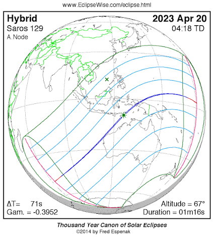
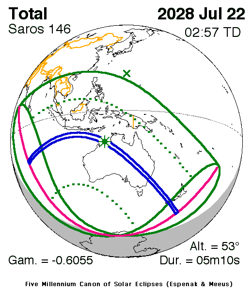
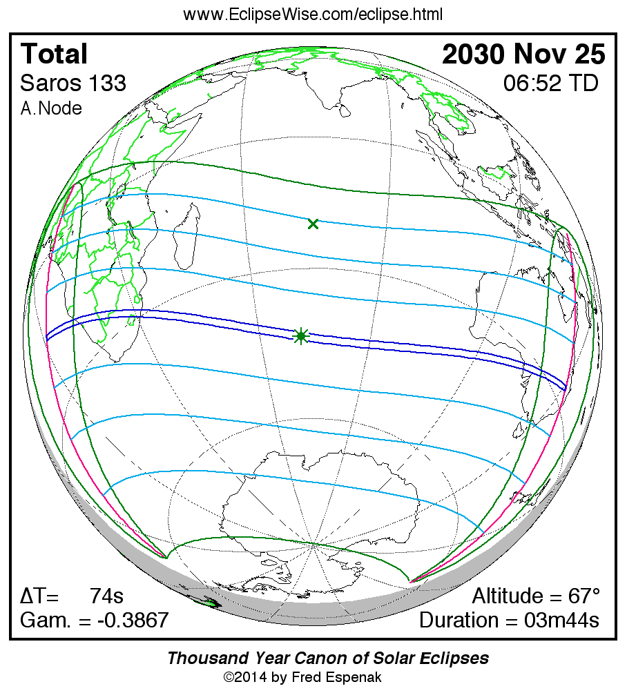
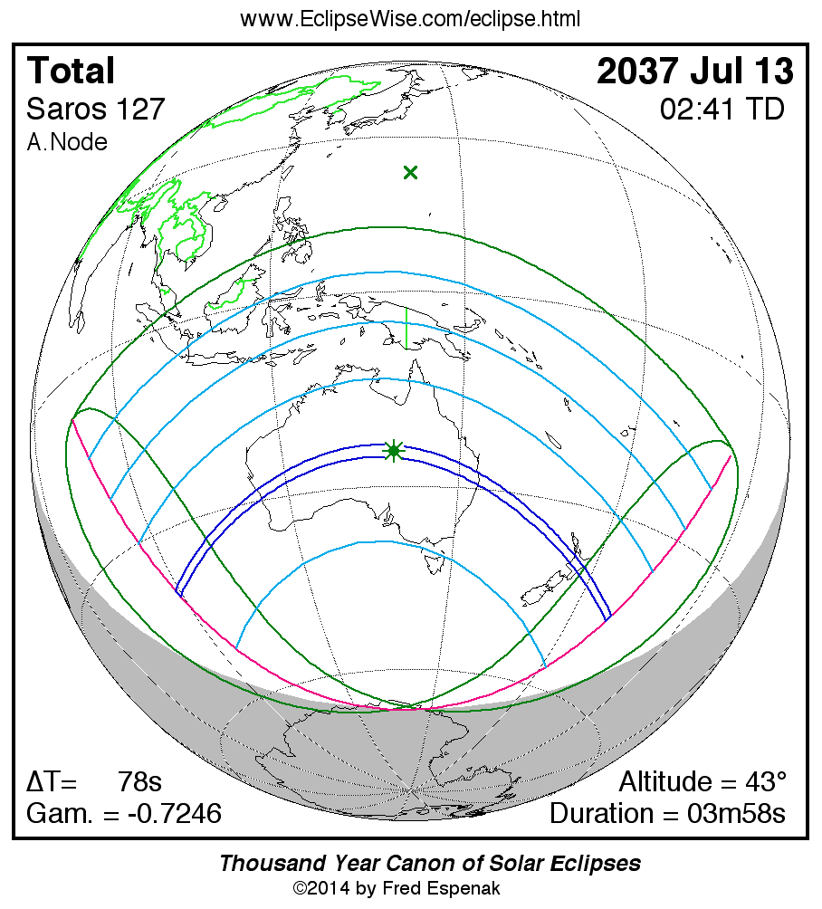
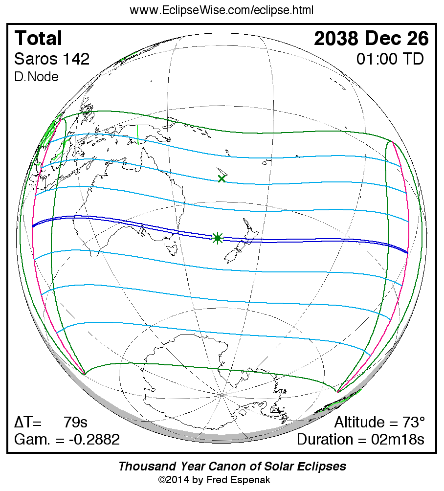
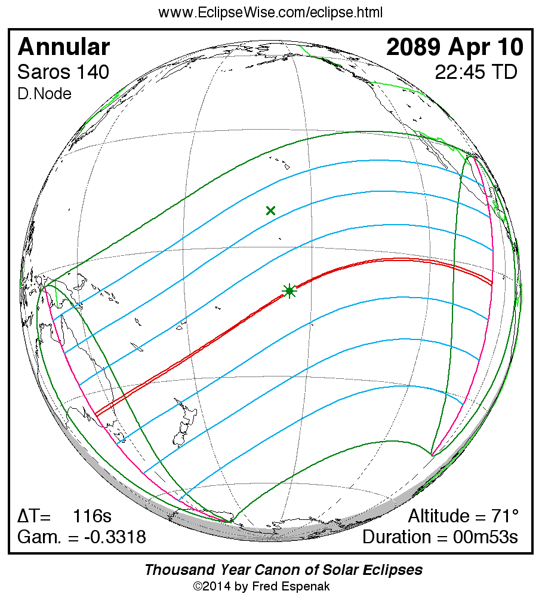
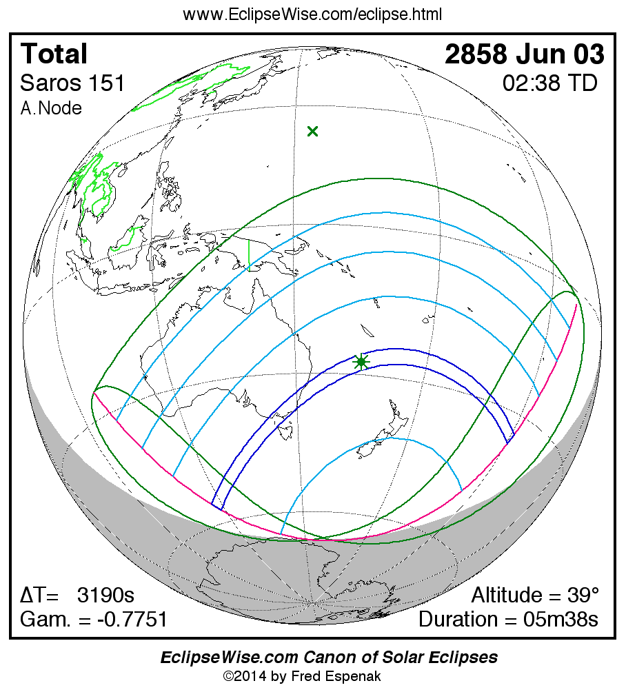

Five total solar eclipses cross Australia between 2023 and 2038. Then Sydney gets an eclipse in 2089 that is almost painfully close to totality. And after that? The timeline becomes ridiculous.
The first five entries form Australia's extraordinary modern run of total solar eclipses. The duration shown on each card is the maximum anywhere along the entire eclipse path, unless a local duration is specifically labelled.
The first eclipse barely clips mainland Australia. The narrow path reaches the North West Cape around Exmouth, Western Australia. It is a hybrid eclipse globally, with totality visible from the Australian path.

The centrepiece. The shadow crosses a huge section of the Australian continent and finishes its mainland journey by passing directly over Greater Sydney.

Australia barely has time to recover from 2028. Just over two years later, the Moon's umbra crosses the country again.

The fourth eclipse sweeps across Australia and gives south-east Queensland its turn. Brisbane, the Gold Coast and several surrounding communities lie within the path.

The Australian Five ends on Boxing Day 2038. The shadow crosses southern Australia and then straddles the New South Wales–Victoria border before heading across the Tasman Sea.

Sydney finally gets another central solar eclipse. The Moon crosses directly in front of the Sun.
The Moon crosses directly in front of the Sun, but it appears too small to cover the solar disc completely. A bright ring remains visible.
That means this is a central eclipse — but not totality.
The eclipse magnitude is about 0.992. The Moon is therefore extraordinarily close to being large enough to cover the Sun completely.
It is the kind of number that makes the word ANNULAR hurt even more.
The eclipse occurs around sunrise. More than half of the Sun is already eclipsed around sunrise, so the event begins with the Sun sitting extremely low above the horizon.
A clear, unobstructed horizon becomes especially important.
The annular phase lasts only around one minute and twenty seconds at the Sydney location being highlighted by SydneyEclipse.
And the annular path does not cover the entire Sydney metropolitan area. Where you stand within Sydney matters.

The distant eclipse finally restores totality to Sydney's story. Its global maximum lasts about five minutes and thirty-nine seconds.

2023 starts the Australian Five. 2028 gives Sydney totality. 2030, 2037 and 2038 continue Australia's run. 2089 comes painfully close. 2858 finally brings the story back to Sydney totality.
← RETURN TO SYDNEY 2028 MISSED 2028? →